{kind=link}
{kind=link}
{kind=link}
{kind=link}
{kind=link}
{kind=link}
{kind=link}
{kind=link}
{kind=link}
{kind=link}
{kind=link}
{kind=link}
{kind=link}
Gdańsk
Naprawy i uszczelnianie dachów kamienic, prace na szczytach zabytkowych budynków Głównego Miasta, dekarstwo na stromych połaciach bez rusztowań.
dachy · kamienice · zabytki · kominy
Realizacje Rope Access Group: zdjęcia i filmy z prac na wysokościach w Gdyni, Sopocie, Gdańsku i na całym Pomorzu. Dachy kamienic, elewacje, napisy, montaże i dekoracje.
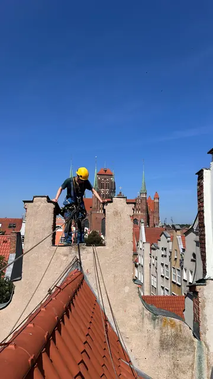
Prace na szczycie kamienicy, Główne MiastoGdańsk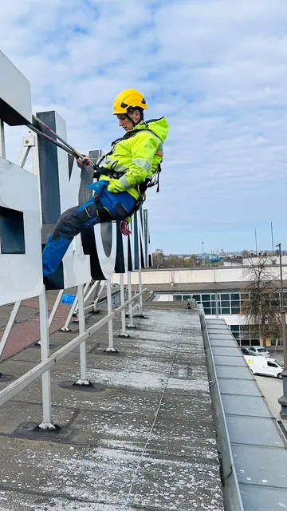
Serwis podświetlanego napisu na dachu budynkuGdynia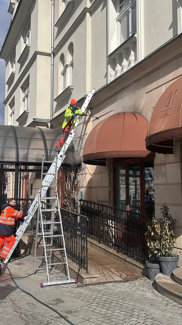
Mycie elewacji i markiz lokaluSopot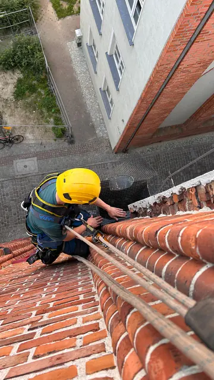
Naprawa pokrycia dachu kamienicyGdańsk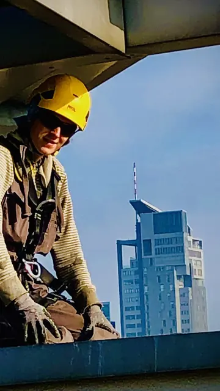
Prace na dachu z widokiem na Sea TowersGdynia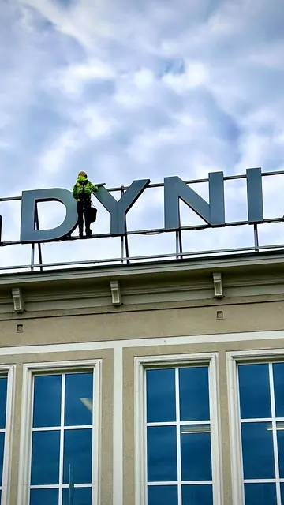
Prace przy napisie na dachuGdynia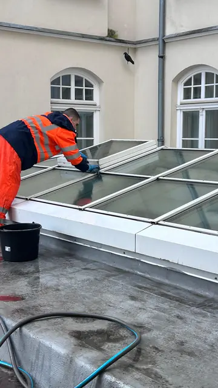
Mycie świetlika dachowegoTrójmiasto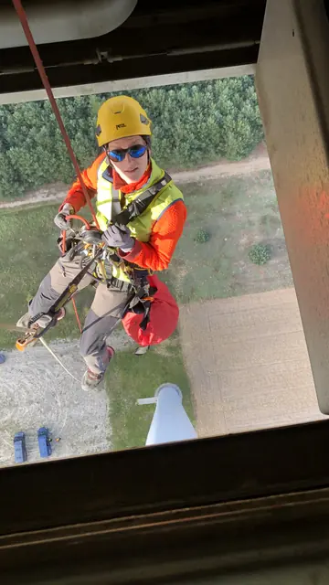
Zjazd na linie z gondoli turbiny wiatrowejOffshore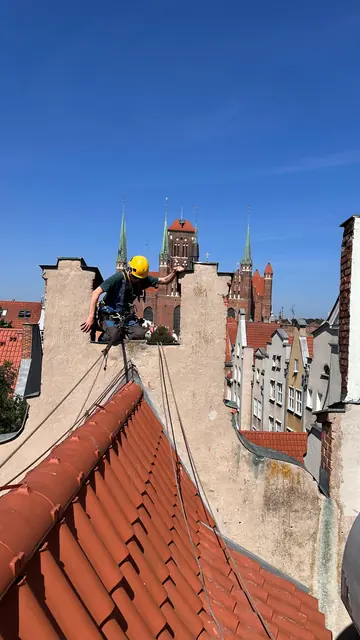
Prace wysokościowe na dachu kamienicyGdańsk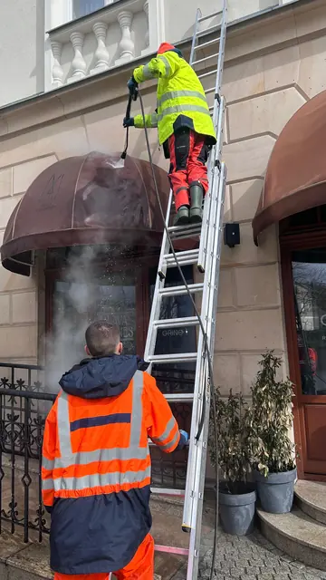
Mycie ciśnieniowe elewacjiSopot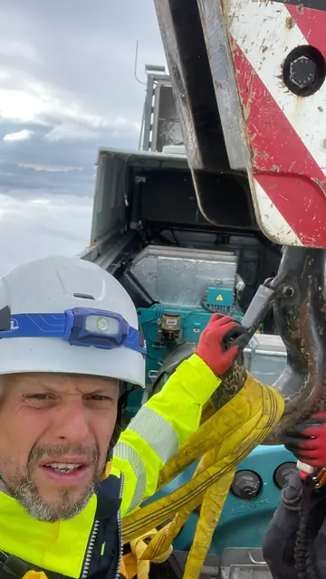
Montaż na szczycie turbiny wiatrowejOffshore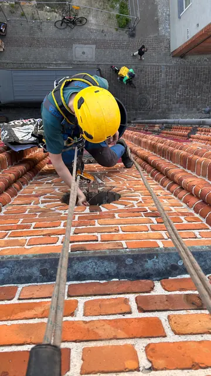
Uszczelnianie dachu kamienicyGdańsk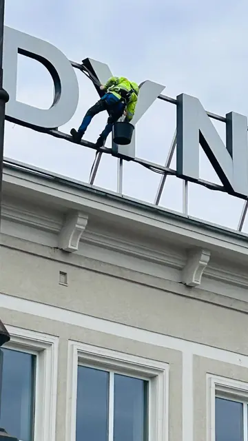
Konserwacja liter napisuGdyniaKażde zdjęcie w galerii to konkretne zlecenie. Poniżej krótko, jakie prace na wysokościach wykonujemy w poszczególnych miastach Pomorza.
Naprawy i uszczelnianie dachów kamienic, prace na szczytach zabytkowych budynków Głównego Miasta, dekarstwo na stromych połaciach bez rusztowań.
dachy · kamienice · zabytki · kominy
Montaż i serwis podświetlanych napisów na dachach, prace na krawędziach dachów budynków w centrum, konserwacja liter i konstrukcji.
napisy · reklamy · dachy · biurowce
Mycie ciśnieniowe elewacji i markiz lokali, czyszczenie fasad kamienic w centrum, mycie świetlików i przeszkleń dachowych.
elewacje · markizy · świetliki · lokale
Poza Trójmiastem: montaże dekoracji w galeriach handlowych, prace w halach przemysłowych oraz serwis turbin wiatrowych onshore i offshore.
Myjemy elewacje i przeszklenia, naprawiamy dachy i kominy, uszczelniamy obróbki, montujemy napisy, reklamy i dekoracje, odśnieżamy dachy i prowadzimy przeglądy. Pracujemy na linach, bez rusztowań i podnośników, w Trójmieście i w całym województwie pomorskim.
Tak. Pracowaliśmy między innymi na dachach i szczytach kamienic na Głównym Mieście w Gdańsku. Dostęp linowy nie obciąża elewacji i nie wymaga stawiania rusztowań w wąskich uliczkach.
Tak. Montujemy i serwisujemy podświetlane napisy na dachach i elewacjach, szyldy, banery oraz dekoracje podwieszane w wysokich atriach galerii handlowych.
Nie. Pracujemy techniką dostępu linowego IRATA, więc docieramy tam, gdzie nie dojedzie podnośnik. Wejścia i chodniki zostają otwarte, a budynek działa normalnie.
Tak. Na tej stronie pokazujemy wybrane zlecenia. Więcej zdjęć z realizacji w Twojej okolicy wyślemy na życzenie, razem z wyceną.
Od wysokości i wielkości obiektu, rodzaju prac i pogody. Po obejrzeniu zdjęć podajemy termin rozpoczęcia i czas trwania prac. Start jest zwykle możliwy w ciągu 24–48 godzin.
Wyślij zdjęcia obiektu, a przygotujemy bezpłatną wycenę, zwykle tego samego dnia roboczego.